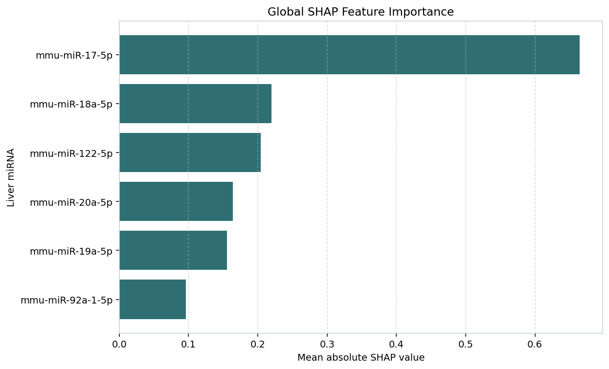

Liver-Brain Cross-Talk Dashboard
LOOCV Fold MSE
| Fold 1 | 1.0244 |
| Fold 2 | 0.2254 |
| Fold 3 | 0.7493 |
| Fold 4 | 3.0498 |
| Fold 5 | 0.6651 |
| Fold 6 | 0.5103 |
| Fold 7 | 0.7015 |
| Fold 8 | 2.0814 |
| Fold 9 | 0.9486 |
Liver miRNA Features
- mmu-miR-122-5p
- mmu-miR-17-5p
- mmu-miR-18a-5p
- mmu-miR-19a-5p
- mmu-miR-20a-5p
- mmu-miR-92a-1-5p
Brain Target miRNAs
- mmu-miR-124-3p
- mmu-let-7c-5p
- mmu-miR-26a-5p
- mmu-let-7a-5p
- mmu-let-7b-5p
Global SHAP Feature Importance
Mean absolute SHAP values for selected liver miRNAs, averaged across samples and output targets.
